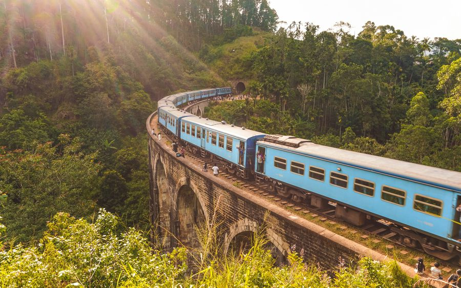

1Nine Arch Bridge
Ella’s landmark and one of the most photographed places in Sri Lanka: a curving viaduct 91 m long and 24 m high, finished in 1921 in stone, brick and cement — the story goes the steel meant for it went to the First World War instead. Set in jungle and tea, it’s best when a blue train rolls across.
From townAbout 20 min on foot from town
OpenAlways open · free by day
Give it1 hour
EffortEasy
From our driversGo before nine — by late morning it’s shoulder to shoulder. Trains are fewer since the line reopened in June, so ask your guesthouse for today’s crossing times. Never stand on the tracks or the bridge for a photo when a train’s due. Too hot to walk? A tuk-tuk goes to the car park above it (≈ Rs 500–800), then it’s ten minutes down.